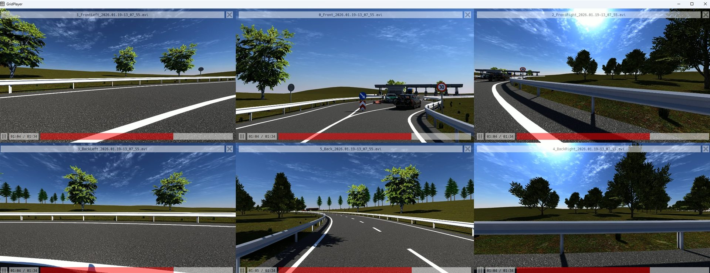
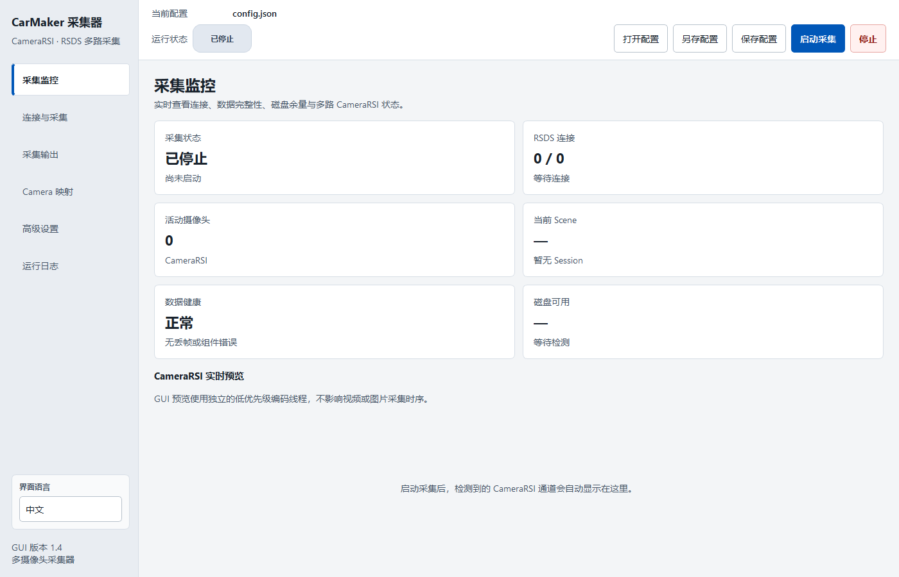
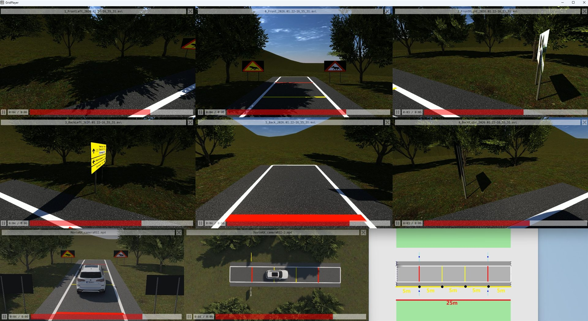

多端口采集
同时连接一个或多个 RSDS 端口，各端口独立重连，单路断开不会阻塞其他数据流。
从 CarMaker / MovieNX 的 RSDS TCP 数据流采集多路 CameraRSI，保存分段视频、定时采样图片和完整会话记录；可自动探测 GPU 硬件编码并在不可用时安全回退。

程序在收到第一帧有效数据后创建独立会话，并持续记录每个相机与写入器的运行状态。
同时连接一个或多个 RSDS 端口，各端口独立重连，单路断开不会阻塞其他数据流。
可探测 NVENC、Intel QSV 与 AMD AMF；也可指定后端，并在允许时回退到 OpenCV CPU 编码。
依据每路 CameraRSI 的仿真时间保存静态图片，不受界面预览刷新频率影响。
显示吞吐率、队列高水位、丢帧、写入状态和磁盘余量，异常不会被静默忽略。
每次采集写入 session_manifest.json，保存配置、时间范围、相机统计与降级状态。
PySide6 界面首次运行按设备语言选择中文或英文，偏好会保存且可实时切换；自动化环境可使用 CLI。
接收、解析、缓存和写入分别处理；原生 BGR 帧以只读 NumPy 视图传递，减少 RSDS 负载和图像数据的重复复制。
CameraRSI 通过一个或多个 TCP 端口输出。
校验报文边界、限制负载大小并处理重连。
解析图像、识别相机 ID 与仿真时间。
选择硬件或 CPU 后端，分别写入视频、图片并统计队列。
汇总 Videos、Images、日志与 Manifest。
界面截图与录制画面均来自开源项目实际运行或输出，不是生成的示意图。


需要 Python 3.10 或更高版本，以及已配置 CameraRSI 输出的 CarMaker / MovieNX。
使用随仓库提供的脚本创建环境并启动图形界面：
git clone https://github.com/Xzeng666/IPGCarMaker_Camera_Recorder.git
cd IPGCarMaker_Camera_Recorder
.\scripts\windows\start_gui.bat授予脚本执行权限后启动图形界面：
git clone https://github.com/Xzeng666/IPGCarMaker_Camera_Recorder.git
cd IPGCarMaker_Camera_Recorder
chmod +x scripts/linux/*.sh
./scripts/linux/start_gui.shpython run.py --config config.json。图形界面使用 python run_gui.py --config config.json。默认 config.json 使用 schema v5。网络端口、输出策略、相机命名、编码后端和故障策略集中配置，未知或缺失字段会在启动时报告。
carmaker_videos/
├── logs/
│ └── recorder-YYYYMMDD.log
└── YYYY.MM.DD-HH_MM_SS_mmm-scene-NNNN/
├── Videos/
├── Images/
└── session_manifest.json会话目录只在收到第一帧有效 CameraRSI 数据后创建。
本项目是独立开发的开源工具，与 IPG Automotive GmbH 无隶属或授权关系。CarMaker 和 MovieNX 是其各自权利人的商标。